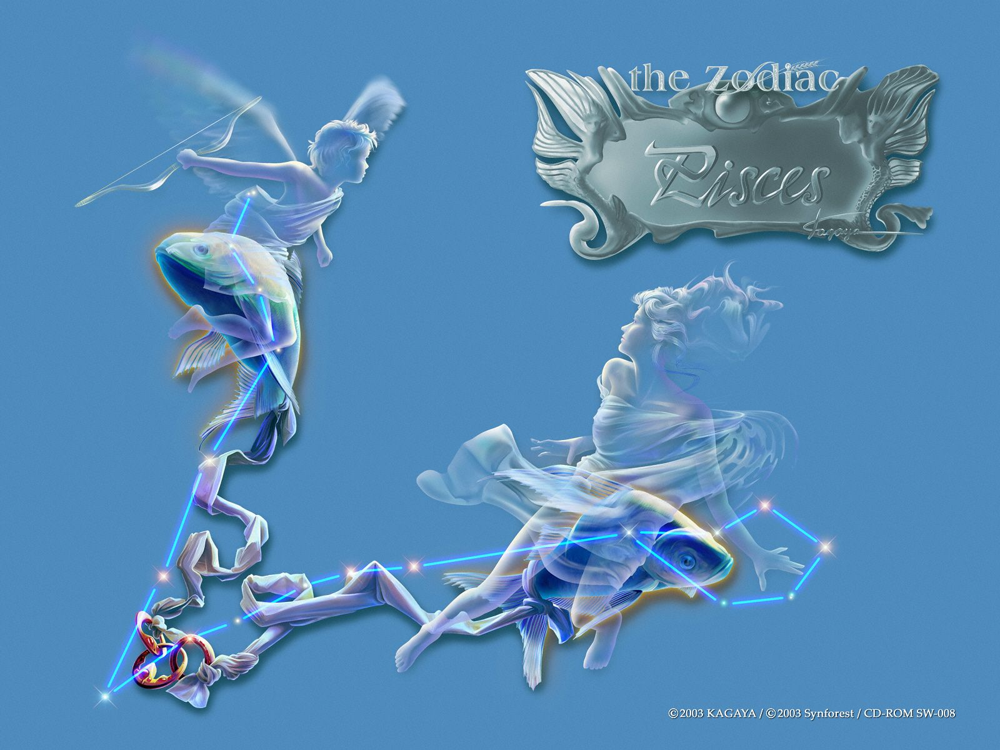
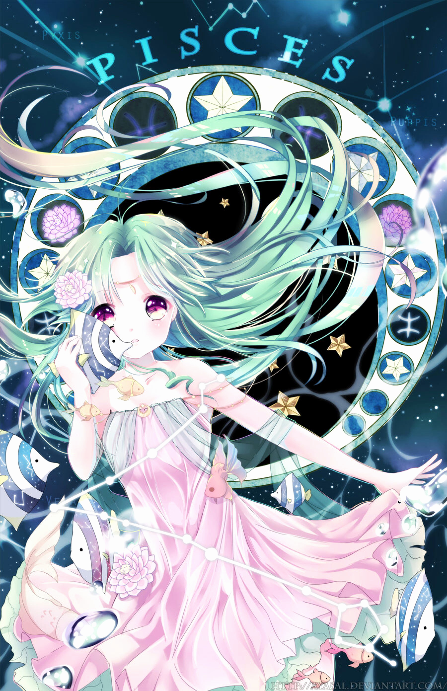

SONG NGƯ
Là biểu tượng của nước. Sao chiếu mệnh là sao Mộc và sao Hải vương. Người cung Pisces rất khôn khéo, dịu dàng và có lòng vị tha. Tuy nhiên, họ dễ bị tự ái và hay lừa dối. Họ có một khả năng học tập khác thường, một trí tưởng tượng phong phú và tính tình hơi phức tạp.
Họ hay do dự và họ không thích hợp cho việc tổ chức, vì vậy nên họ thích làm việc dưới quyền người khác, trong cuộc sống riêng tư lẫn trong công việc. Những nghề nghiệp phù hợp cho người Pisces: Cầu thủ bóng đá, y tá, người trung gian môi giới, thợ máy và nhà nhiếp ảnh. Họ có đức tin cao và sự lãng mạn của nghệ sĩ. Họ rất dè dặt, vì vậy thật không dễ để hiểu hết được họ. Tình bạn, sự thật và một tình yêu vĩnh cửu là những thứ quan trọng nhất đối với người Pisces.
2, Mô tảBí ẩn và quyến rũ, hầu hết các nàng Tiên Cá có tài năng ở một lĩnh vực nhất định nào đó. Tuy vậy, cuộc đời họ là một chuỗi đấu tranh, đắn đo khi đứng trước 2 dòng nước, không biết nên bơi theo dòng nào.
Biểu tượng của họ là hình ảnh 2 con cá nằm ngược chiều nhau. Chúng phản ánh hiện thực rằng Song Ngư luôn giằng xé giữa 2 con đường đời, hoặc trong họ tồn tại 2 mặt tính cách đối lập: 1 là vị thánh và 1 là kẻ tội đồ.
Người thuộc sao Song Ngư có tài coi bói và thường làm người khác ngạc nhiên với tài tiên đoán của mình. Họ còn có khiếu trong lĩnh vực sáng tạo như thiết kế hay âm nhạc. Họ có đôi mắt rất ấn tượng và đó chính là thứ đầu tiên thu hút người khác giới. Họ có thể là người đầu tiên tung tin đồn và ít khi giữ được bí mật.
Họ thấy khó khăn khi phải từ chối người khác vì thế khì cần người Song Ngư giúp chuyện gì, bạn chỉ cần tỏ ra van nài một chút là ổn. Song Ngư là bạn của mọi người, họ thích nơi yên tĩnh và cảnh thiên nhiên tươi đẹp và có thể sẽ không cảm ơn nếu bạn mang đến một bữa tiệc bất ngờ.
Điểm yếu của Song Ngư là quá mơ mộng. Họ nhìn đời qua lăng kính màu hồng. Khi mọi thứ đều ngọt ngào và lãng mạn, họ như được lên 9 tầng mây. Tuy nhiên, đến lúc phải hạ cánh, hiện thực trần trụi khiến họ buồn bã. Họ cần nghỉ ngơi để cứu vãn cuộc đời qua khỏi mớ áp lực hỗn độn.
3, Tính cách cơ bảnLần đầu tiên khi nhìn thấy biểu tượng của chòm Song Ngư, rất nhiều người sẽ hỏi:
“Tại sao hai con cá này lại nối liền với nhau? Sợi dây xích giữa chúng có tác dụng gì ?”
Câu trả lời, những nhà chiêm tinh học thời cổ đại phần lớn dùng lực tác dụng tương phản này để đại diện cho đặc trưng mâu thuẫn không thể điều hoà giữa hai tinh thần và vật chất. Sự mâu thuẫn này thường xuyên dày vò Song Ngư và đem lại cho họ những kích phát tình cảm. Cũng giống như hai con cá, Song Ngư cũng quen với việc sống trong hoàn cảnh không thu hút sự chú ý của người khác, họ không thích ứng với hoàn cảnh thay đổi.
Trên thực tế, muốn nâng cao khả năng sinh tồn thì cần phải nắm chặt thực tế, mà Song Ngư lại rất ít có tinh thần thực sự cầu thị này. Họ chìm đắm trong hoang tưởng, vì vậy khả năng độc lập sinh tồn của Song Ngư rất yếu. Có thể dễ dàng nhận thấy, để duy trì nhu cầu sinh tồn cơ bản, họ cần phải hết sức tiếp cận thực tế, đương nhiên họ có thể làm được như vậy, nhưng Song Ngư lại rất ghét việc này.
Thế giới đầy tình cảm lãng mạn và sắc màu rất thu hút con người, không ai có thể chống lại sự hấp dẫn của thế giới tinh thần này. Nhưng trên thực tế, so với những người thực dụng, Song Ngư có rất ít khả năng biến những giấc mơ của mình trở thành hiện thực.
Được gọi là thiên tài vĩ đại nhất của thế kỉ 20, Albert Einstein, sinh ngày 14 tháng 3 năm 1879, tại Đức, thuộc chòm Song Ngư. Khi thảo luận về những sáng kiến của mình, ông thừa nhận lý luận này hoàn toàn được nảy sinh trong đầu óc bắt nguồn từ những tưởng tượng kì lạ đột phát.
Trên thực tế, lý luận này vào thời kì đó là đi trước thời đại, đến mức Einstein không thể không vắt óc để giải thích với những người đồng sự thiếu khả năng tưởng tượng và sức sáng tạo. Khi nói đến thái độ sống của ông, Einstein đã từng nói: “Mọi việc làm của tôi đều do tôi quyết định”.
Câu nói này của ông có thể nói là đã phá vỡ đặc điểm hạt nhân của chòm Song Ngư. Do họ làm việc thích kích động, thông thường đều khá tuỳ tiện, vì vậy luôn có khiếm khuyết trong cuộc sống độc lập và trên phương diện xử lý các mối quan hệ xã hội.
Khi đưa ra quyết định cho một số việc nào đó, họ thường thường rất khó nói rõ căn cứ và nguyên nhân khiến cho mình đưa ra quyết định đó, chỉ là cảm thấy trong lòng có một loại động lực tự nhiên khiến cho họ làm như vậy.
Nếu đối với những người xung quanh mà nói, Song Ngư có thể đưa ra quyết định vô cùng kì quái, những giải thích trên có thể khiến cho mọi người lượng giải nhiều hơn cho những hành động mà họ làm. Mặt khác, tuy những người thuộc chòm sao khác có thể sẽ có trách nhiệm hơn so với họ ở phương diện này, nhưng điều này cũng có liên quan mật thiết với tính cách của họ. Do đó, Song Ngư phần lớn đều hi vọng người khác hiểu mình hơn một chút.
Song Ngư đều giàu tình cảm, họ phần lớn đều tin thờ giáo nghĩa từ thiện “lấy việc giúp người khác làm vui”, luôn sẵn lòng lắng nghe những điều bất hạnh của người khác, giơ tay ra cứu giúp người khác. Đối với những người thuộc hoàn cảnh ngang trái hoặc bất hạnh, họ là những thần hộ mệnh tốt nhất.
Về phương diện trang phục, Song Ngư có khuynh hướng ăn mặc thời thượng, thậm chí đi trước thời đại, kiểu dáng quần áo thường rất mới lạ, các đồ trang sức cũng khá nhiều, hoàn toàn khác với những trang phục chính thống. Nhưng, tuy thích mặc những bộ quần áo thời thượng, nhưng về vẻ bề ngoài, Song Ngư lại không để lại cho mọi người cảm giác khoa trương, khiến cho mọi người cảm thấy tuy sặc sỡ nhưng không loè loẹt, phong độ nhưng không mất đi vẻ cao quý.
Trong cách bài trí căn phòng, Song Ngư cũng hết sức thể hiện khả năng sáng tạo và tưởng tượng của mình. Mọi người muốn hiểu về loài động vật dưới đáy biển, họ sẽ bị sự yên tĩnh và an bình của thế giới đáy biển thu hút, ở đây thật sự là một thế giới tinh thần lý tưởng. Song Ngư hoàn toàn không phải là không hiếu khách, họ cũng thích ở một mình nhiều hơn, khiến cho tư tưởng của họ được thả lỏng bay bổng, lang thang khắp nơi tuỳ theo trí tưởng tượng của họ.
Do quá mẫn cảm và dễ chịu ảnh hưởng của những người xung quanh, Song Ngư dễ dàng tin người và đồng tình với người khác, thậm chí còn vì vậy mà khiến cho mình chịu những phiền phức không cần thiết. Đối với những chòm sao khác mà nói, đặc điểm tính cách này không chỉ sẽ làm lỡ mất thời gian, mà còn dễ dàng khiến cho mình bị lừa, thậm chí là một biểu hiện vô cùng ngốc nghếch.
Nhưng Song Ngư trước nay không để ý đến suy nghĩ của người khác, họ cứ làm theo suy nghĩ chỉ huy của bản thân. Đồng thời, họ không chủ động tranh giành gì với người khác, cho dù là danh dự, địa vị hay là lợi ích kinh tế.
4, Phương thức tư duy, kỹ xảo giao lưu và khả năng thích ứng với công việc“Mãi mãi sống trong thế giới mơ mộng”, dùng câu nói này để miêu tả Song Ngư là vô cùng thích hợp. Trên thực tế, trong quá trình lần đầu tiên tiếp xúc với người khác, Song Ngư thường không lập tức biểu hiện đặc điểm không thực tế của mình, thậm chí còn khiến cho người khác coi lời nói và hành động ngây thơ của mình là những biểu hiện siêu phàm thoát tục.
Họ cho rằng suy nghĩ của họ chỉ có một chút không thực tế, nhưng hoàn toàn không phải là không thể thực hiện được. Nhưng cùng với số lần giao tiếp tăng lên, những người xung quanh họ sẽ dần dần ý thức được rằng nếu dựa vào những logic trong cuộc sống hiện thực để suy xét những suy nghĩ của Song Ngư, vậy thì sẽ phát hiện thấy những suy nghĩ này không thực tế thiết thực đến mức nào.
Do Song Ngư quá tin tưởng vào kì tích và những câu chuyện thần thoại khiến cho chúng phát sinh ngay trong bản thân họ, vì vậy những người xung quanh có khi thậm chí còn nghi ngờ tinh thần họ có bình thường hay không. Đặc biệt là đối với mốt số những chòm sao thực dụng, thích bám chặt vào thực tế để suy xét vấn đề, họ rất khó liên hệ thực tế với Song Ngư.
Thế là, do không thể có được sự thông hiểu của người khác, Song Ngư vốn dễ nảy sinh những cảm giác trắc trở, tự nhiên sẽ cảm thấy rất đau khổ, điều này dẫn đến họ càng rơi vào cái vòng nhỏ của mình mà không thể thoát ra được.
Từ một ý nghĩa nào đó mà nói, Song Ngư có thể gọi là có một số những cố chấp và giới hạn. Cho dù là những người xung quanh có đối đãi với mình như thế nào, họ hầu như không ý thức được suy nghĩ của mình có gì đúng không, thậm chí nghe theo lời khuyên của người khác trở nên thực dụng hơn một chút, điều này sẽ càng không phải là chuyện gây ảnh hưởng. Nếu ngẫu nhiên trong một số trường hợp Song Ngư không vì những suy nghĩ không thực tế của mình mà bị hổ thẹn hoặc gặp khó khăn, thì chủ yếu là vì những hành động và suy nghĩ ngây ngô của họ khiến cho mọi người xung quanh không nỡ dội cho họ một gáo nước lạnh, cũng giống như người lớn luôn không nỡ từ chối một đứa trẻ con.
Trên một phương diện khác, những người luôn tiếp xúc với Song Ngư cũng thường xuyên phát hiện thấy, Song Ngư cũng hoàn toàn không phải lúc nào cũng ở trong trạng thái ngây thơ chất phác đơn thuần, dễ bị lừa gạt, khi bước chân vào vấn đề làm thế nào để chối bỏ trách nhiệm, họ có khi cũng sẽ vô cùng giảo hoạt, thậm chí có thể vì vậy mà khiến cho mọi người xung quanh bị tổn thương hoặc gặp rắc rối.
Song Ngư trên phương diện giao lưu ngôn ngữ phần lớn không vì sự bất đồng quan điểm mà phát sinh tranh chấp với người khác, họ trong quá trình giao tiếp thường có thái độ ôn hoà, dùng từ không quá mạnh mẽ cứng nhắc, khiến cho người khác có ấn tượng hài hoà thân mật, không cố tạo ra sự uy nghiêm hoặc quyền lực.
Nhưng cho dù là ngữ khí khi họ nói chuyện thể hiện sự khiêm nhường cung kính, trong lời nói rất ít khi mang khẩu khí khiêu chiến, nhưng trong một số trường hợp cũng có thể khiến cho đối phương tâm phục, thành tâm thành ý tiếp thu quan điểm của họ, điều này là một trong những đặc điểm của Song Ngư.
Đương nhiên do tính ôn thuận, cho nên Song Ngư thông thường cũng dễ tiếp nhận quan điểm của người khác, nhưng họ luôn thể hiện sự tán đồng với người khác trong lời nói, nhưng luôn tự làm theo ý mình, làm việc theo suy nghĩ của mình.
Đồng thời, do quá mẫn cảm với những người và sự việc xung quanh, Song Ngư thường thể hiện một năng lực thích ứng nhất định đối với vai trò thay đổi, đây cũng là một trong những nguyên nhân chủ yếu giải thích tại sao Song Ngư lại có thể giành được những bước phát triển lớn trong lĩnh vực biểu diễn nghệ thuật.
Rất nhiều người thuộc chòm Song Ngư vì vậy có thể nhanh chóng thích ứng với những vai diễn khác nhau, vì bản thân khả năng xây dựng tính cách của họ rất mạnh, dễ có được sự điều chỉnh tương ứng đối với những nhu cầu căn cứ vào những vai diễn khác nhau, bao gồm các phương diện thân hình, ngôn ngữ, giọng điệu… Trong đó, có hai diễn viên rất siêu việt trong phương diện này thuộc chòm Song Ngư là Elizabeth Taylor (27/2/1932) và Michael Kalen (14/3/1933).
Đương nhiên hoàn toàn không phải là mỗi người thuộc chòm Song Ngư đều có may mắn phát huy được hết tài năng của mình giống như hai diễn viên này, nhưng hầu như những người thuộc chòm Song Ngư đều có khả năng vận dụng sở trường này của mình trong cuộc sống khiến cho người khác không coi thường mình.
Trên rất nhiều phương diện, Song Ngư đều có sức sáng tạo và sức tưởng tượng hơn những chòm sao khác, nghệ thuật thiên bẩm của họ rõ ràng là vượt qua người khác. Song Ngư trong cuộc sống thường ngày cũng biểu hiện được sức tưởng tượng trí tuệ phong phú của mình, đem lại những kích thích tình cảm và những linh cảm cho người khác, mở rộng tầm nhìn của họ. Đặc điểm có thể đem lại cho người khác sức sống mới mẻ này khiến cho Song Ngư luôn có thể có được sự yêu mến của đồng nghiệp cùng đơn vị công tác. Ngoài ra, do họ không thích nghe ngóng chuyện riêng của người khác, tính tình và cách đối nhân xử thế của họ cũng không tồi, biết dùng từ ngữ, thể hiện sự hài hước hóm hỉnh vì vậy rất dễ được mọi người yêu quý.
Trong 12 cung hoàng đạo, Song Ngư có thể nói là chòm siêu thoát thế tục nhất. Thái độ sống “tôi tin rằng” này chứng tỏ họ rất coi trọng tính trọng yếu của tác dụng tinh thần, mặc khác, họ không có hứng thú với sự giàu có của vật chất của cải trên trần thế này.
Đương nhiên, là một phàm phu tục tử, Song Ngư cũng hoàn toàn không coi tiền bạc là cỏ rác, nhưng việc quản lý chi tiêu lương bổng, quản lý nhân sự và quản lý công việc của họ luôn làm cho người khác đau đầu, vì vậy kết quả cuối cùng luôn là Song Ngư cũng ý thức được sự không thực tế của mình đã trở nên vô phương cứu chữa, khả năng lo liệu cuộc sống rất kém, vì vậy họ có lúc còn dựa vào người khác rất nhiều để thay mình giải quyết những vấn đề khó khăn phải đối mặt trong cuộc sống.
Song Ngư đặc biệt không thích làm việc dựa vào thời gian biểu. Tóm lại, Song Ngư cũng có thể kết giao với một số người bạn rất tốt hoặc những người bạn làm ăn mật thiết, nhưng những người bạn này cần phải cũng có sức tưởng tượng tương tự, và không được tức giận vì Song Ngư không thích bị kiềm chế thời gian.
Trên phương diện công việc, Song Ngư thích xử lý những công việc có thể phát huy đầy đủ sức sáng tạo và khả năng tưởng tượng của mình. Những người này không thích hợp với việc suốt ngày vùi đầu vào công việc hoặc những công việc phải tuân thủ theo quy tắc dựa vào ban bộ.